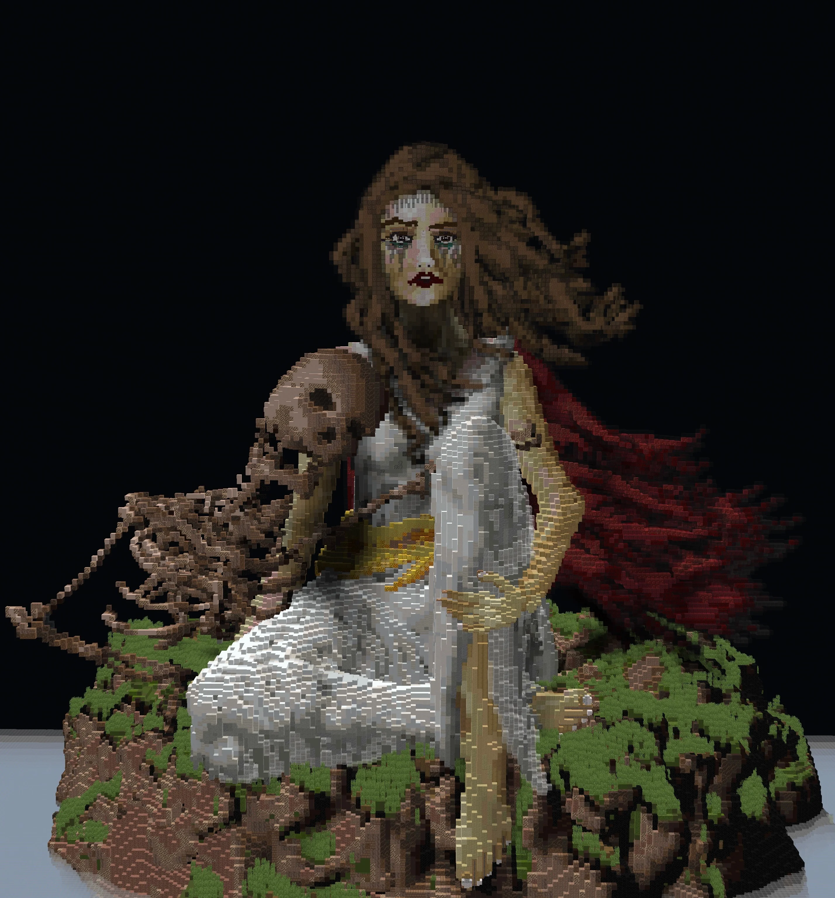
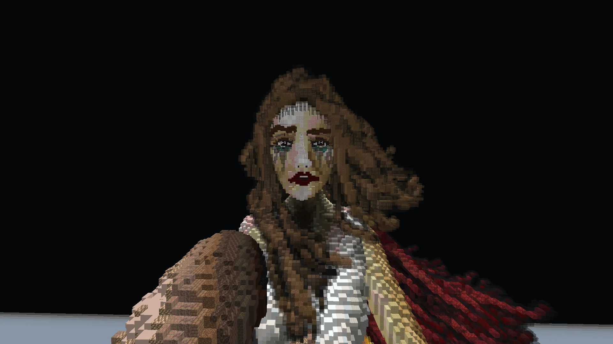
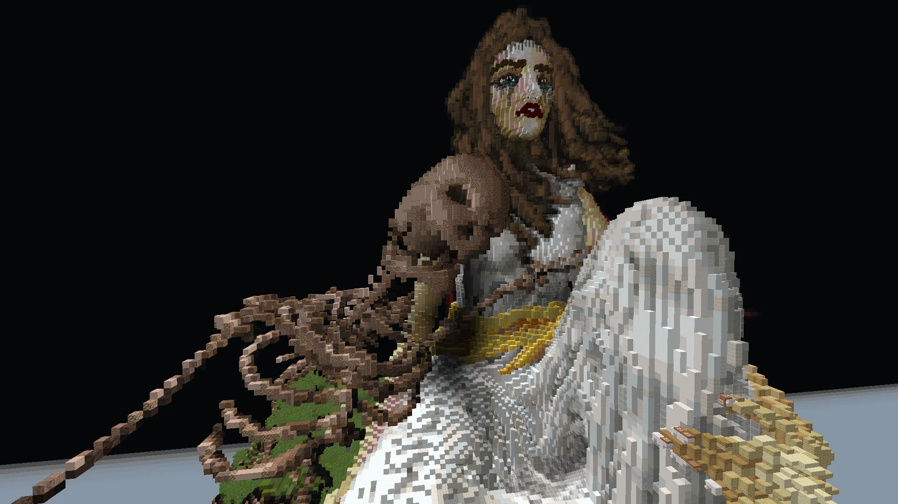

Gallery



- Year
- 2026
- Minecraft Version
- Java 1.21.11
- Style
- Organic / Character Sculpture
- Type
- Personal / Ongoing series
- Role
- Organic sculpture, composition
- Tools
- WorldEdit, VoxelSniper, Axiom
- Platform
- BuildersRefuge
- Series
- Homer-inspired
Project Overview
The Helen of Troy showcase is a large-scale Minecraft organic sculpture focused on the human form. It's part of an ongoing series of Homer-inspired Minecraft builds reimagining moments from the Iliad and the Odyssey through voxel geometry - treating Minecraft as a legitimate sculptural medium rather than a purely architectural one. Helen is the first entry in that series and functions as both a portfolio piece and a technical study of large-scale organic sculpting.
Where most of my portfolio focuses on architecture, terrain, and full environments, this build strips everything else away and asks a single question: how much emotional weight can a voxel figure carry when composition, silhouette, and proportion are all treated as first-class design problems? The answer, at this scale, turns out to be quite a lot.
Human Voxel Sculpture at Scale
The core challenge of the piece is translating the human form into voxel geometry without losing gesture, proportion, or emotion. Face construction, hair, drapery, and pose are all designed to work at scale - legible at a distance, expressive up close. Curves are shaped through layered voxel refinement rather than heavy detail spam, using WorldEdit, VoxelSniper, and Axiom for smoothing and sculpting passes.
The underlying structure - visible in the skeleton view - is built first as a proportional armature, then progressively wrapped, refined, and re-carved. Every major surface (cheekbones, collarbone, drapery folds) is intentionally shaped so that the block palette does the work of tonal shading rather than relying on textures or shaders to sell the volume.
Composition and Silhouette
Silhouette drives the piece. The seated figure is composed to read cleanly from the primary approach angle, with negative space and drapery used to guide the eye toward the face. It's presented as an organic showcase - not photorealism, but a demonstration of how much emotional weight voxel character sculpture can carry when it's designed with intent.
Composition follows classical figurative sculpture principles: a stable triangular base formed by the drapery and legs, a rising vertical line through the torso, and the head as the visual peak. This gives the build the same monumental read as traditional sculpture while remaining entirely native to Minecraft's cubic grid.
Ongoing Homer Series
Helen is one entry in a larger body of Homer-inspired Minecraft sculpture. Future pieces in the series will continue exploring characters, scenes, and moments from the Iliad and the Odyssey at similar scale - Achilles, the Trojan Horse, Odysseus and the sirens, and additional figurative studies. The intent is to build a consistent body of work that treats Minecraft as a serious medium for figurative and narrative sculpture, not just building and terrain.
Tools and Process
The build was made on BuildersRefuge using a combination of WorldEdit, VoxelSniper, and Axiom. Axiom's sculpting and smoothing tools are particularly well-suited to organic voxel work - they let the geometry be re-carved iteratively rather than committing to blocky decisions early. VoxelSniper handled coarse volume passes; WorldEdit handled clean-up and palette adjustments; Axiom handled the finishing surface work.
Related Projects


Organic sculpture or character build?
If you need large-scale organic or character sculpture in Minecraft, I'd be glad to talk.
Discuss a Project